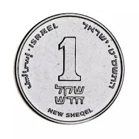

2 קבוצות וכמתים
בפרק הקודם דימינו את שפת המתמטיקה לשפה שיש בה אוצר מילים וכללים לחיבור משפטים. הכרנו כמה מכללי הלוגיקה; כעת נוסיף לאוצר המילים מושג בסיסי: קבוצה.
גם בשפה היומיומית יש מילים שמאפשרות לדבר על אוספים. כשאומרים ״כלי נגינה״, ״רהיטים״ או ״שחקני שחמט״, אפשר לדבר על כל העצמים מהסוג הזה, בלי למנות כל אחד בנפרד. כך גם במתמטיקה: לעיתים רוצים לדבר על אוסף של מספרים או של עצמים אחרים, ולבדוק מה משותף להם או במה שני אוספים נבדלים.
קבוצה מאפשרת להתייחס לאוסף כאל עצם אחד. אפשר לתת לאוסף שם, לבדוק מה שייך אליו ולהשוות אותו לאוספים אחרים. למשל, במקום לחזור בכל פעם על רשימת הנרשמים לקורס, אפשר לדבר על ״קבוצת הנרשמים״ ולשאול אם סטודנט מסוים שייך אליה.
2.1 קבוצות, איברים ושייכות
2.1.1 מהי קבוצה?
כשמתארים אוסף במתמטיקה, צריך שיהיה ברור מה נכלל בו ומה לא. שם כמו ״המספרים הזוגיים״ נותן תנאי ברור; שם כמו ״המספרים היפים״ עדיין משאיר שאלה: מה נחשב יפה?
הגדרה 2.1.1 — קבוצה ואיבר.
קבוצה היא אוסף של עצמים שמוגדר בבירור אילו עצמים שייכים אליו. העצמים שבקבוצה נקראים איברים.
אפשר לתאר קבוצה באמצעות רשימת איבריה בתוך סוגריים מסולסלים. למשל:
\[A=\{2,5,8\}.\]
האות \(A\) היא שם הקבוצה. איבריה הם המספרים \(2\), \(5\) ו־\(8\).
האיברים אינם חייבים להיות מספרים. למשל, אפשר לדבר גם על קבוצת הסטודנטים שנרשמו לקורס או על קבוצת ימי השבוע.
הגדרה 2.1.2 — שייכות ואי־שייכות.
הסימון \(x\in A\) אומר: ״\(x\) שייך ל־\(A\)״, כלומר \(x\) הוא איבר של \(A\).
הסימון \(x\notin A\) אומר: ״\(x\) אינו שייך ל־\(A\)״.
למשל, עבור \(A=\{2,5,8\}\), מתקיים \(5\in A\) וגם \(3\notin A\).
כדי להגדיר קבוצה, צריך לקבוע מי איבר שלה ומי אינו איבר שלה. לכל עצם מסוים \(a\) בתחום שבו דנים, הטענה \(a\in A\) צריכה להיות פסוק בעל ערך אמת מוגדר: אמת או שקר. זהו הקשר לפסוקים מהפרק הקודם.
ערך אמת מוגדר אינו אומר שאנחנו בהכרח יודעים אותו. ייתכן שהקבוצה מוגדרת היטב, אבל עדיין לא בדקנו אם עצם מסוים שייך אליה.
קבוצה נקבעת על פי איבריה. כלומר, מה שקובע איזו קבוצה זו הוא מה שייך אליה ומה אינו שייך אליה — ולא השם שנתנו לה או מה ידוע לנו עליה. מכאן נובע כיצד משווים בין קבוצות:
הגדרה 2.1.3 — שוויון קבוצות.
שתי קבוצות \(A\) ו־\(B\) שוות, ומסמנים \(A=B\), כאשר יש להן בדיוק אותם איברים. כלומר, כל עצם ששייך לאחת מהן שייך גם לאחרת.
כדי להראות שאינן שוות, מספיק למצוא איבר ששייך לאחת מהן ואינו שייך לאחרת. מסמנים זאת \(A\ne B\).
דוגמה 2.1.4 — האם התיאור מגדיר קבוצה?
א. המספרים הזוגיים. מספר שלם נקרא זוגי אם הוא מתחלק ב־\(2\) ללא שארית. האם זהו תנאי ברור לשייכות?
כן. למשל, \(6\) שייך לקבוצת המספרים הזוגיים ו־\(7\) אינו שייך אליה. לכל מספר שלם יש תשובה מוגדרת, גם אם לא חישבנו אותה עדיין.
ב. המספרים היפים. האם התיאור הזה מספיק כדי להגדיר קבוצה?
לא בלי הסבר נוסף: לא קבענו מה פירוש ״מספר יפה״. אם נסכים, למשל, שבתרגיל הזה ״יפה״ פירושו מספר שלם שספרת האחדות שלו היא \(7\), נקבל תנאי ברור וקבוצה מוגדרת. הבעיה אינה בשם ״יפה״, אלא בהיעדר תנאי מוסכם.
ג. כלי הנגינה בחדר. לא ברור אם גם הקול של הזמר נכלל. מה צריך לעשות כדי להגדיר את הקבוצה?
צריך לקבוע מה נחשב כאן כלי נגינה. אפשר להחליט שסופרים רק חפצים שנועדו לנגינה, או לתת רשימה מפורשת: הגיטרה, התוף והפסנתר שבחדר. אין צורך להכריע בוויכוח מוזיקלי; צריך שההגדרה שבה משתמשים תקבע מה שייך לאוסף.
דוגמה 2.1.5 — בודקים את הרשימה, לא מנחשים.
תהי \(A=\{1,4,9\}\). קבעו אמת או שקר לכל טענה:
א. \(9\in A\).
\(9\) מופיע ברשימה, ולכן \(9\in A\) הוא פסוק אמת.
ב. \(6\in A\).
\(6\) אינו מופיע ברשימה, ולכן \(6\in A\) הוא פסוק שקר. בקבוצה נמצאים רק האיברים שצוינו; לא כל המספרים שבין \(1\) ל־\(9\).
2.1.2 סדר, חזרות ומספר האיברים
לפי הגדרת השוויון, בודקים אילו איברים שייכים לכל קבוצה. נשתמש בכך כדי לבדוק אם חזרה על אותו איבר משנה את הקבוצה.
דוגמה 2.1.6 — אפשר להתעשר בעזרת סוגריים מסולסלים?
נשתמש בתמונת השקל כסמל לאיבר אחד. השוו את שתי הכתיבות:

,,, }האם זו אותה קבוצה?
כן. סמל השקל שייך לשתי הקבוצות, וכל עצם אחר אינו שייך לאף אחת מהן. לכל עצם מתקבלת אותה תשובה לשאלת השייכות — ולכן זו אותה קבוצה.
אם רק היה אפשר למלא ככה גם את הארנק…
חזרה על אותו איבר אינה משנה את הקבוצה. השייכות אומרת ״כן״ או ״לא״, ולא כמה פעמים כתבנו את האיבר. מאותה סיבה, גם הסדר אינו משנה: הזזת איבר ברשימה אינה משנה אם הוא שייך לקבוצה.
כך גם במספרים: אפשר לשנות את הסדר או לחזור על איבר, ועדיין לקבל אותה קבוצה:
\[\{3,6,10\}=\{10,3,6\}=\{3,6,6,10\}.\]
מונח חדש 2.1.7 — מספר אי־שלילי.
מספר אי־שלילי הוא מספר שאינו שלילי: הוא חיובי או אפס. למשל, \(0\), \(3\) ו־\(\tfrac12\) הם אי־שליליים; \(-2\) אינו אי־שלילי. כותבים \(x\ge 0\). שימו לב: אפס הוא אי־שלילי, אבל אינו חיובי.
מונחים חדשים 2.1.8 — קבוצה סופית, קבוצה אינסופית ויחידון.
- קבוצה היא סופית אם יש בה מספר סופי של איברים: אפשר למנות את כולם ולסיים. למשל, בקבוצת ימי השבוע יש שבעה איברים.
- קבוצה שאינה סופית נקראת אינסופית. למשל, קבוצת המספרים הזוגיים שאינם שליליים היא \(\{0,2,4,6,\ldots\}\). שלוש הנקודות אומרות שממשיכים באותו כלל: מוסיפים בכל פעם \(2\). אין בקבוצה הזאת מספר אחרון — לכל מספר בה יש מספר גדול ממנו שגם הוא שייך אליה.
- קבוצה שיש בה איבר אחד נקראת יחידון.
גם קבוצה אינסופית יכולה להיות מוגדרת היטב: בקבוצה שבדוגמה, \(12\) שייך ו־\(13\) אינו שייך. יש כלל ברור לשייכות, אף שאי אפשר לכתוב את כל האיברים ולסיים.
הגדרה 2.1.9 — עצמה של קבוצה סופית.
העצמה של קבוצה סופית \(A\) היא מספר האיברים השונים שלה. מסמנים אותה \(|A|\) וקוראים ״העצמה של \(A\)״. למשל:
\[A=\{2,5,8\}\quad\Longrightarrow\quad |A|=3.\]
\(A\) היא קבוצה; \(|A|\) הוא מספר. הקווים אינם מציינים כאן ערך מוחלט.
המושג עצמה משמש גם לקבוצות אינסופיות, אבל כאן נעסוק בספירת איברים בקבוצות סופיות.
אותו מספר איברים אינו מספיק לשוויון. הקבוצות \(\{1,4\}\) ו־\(\{1,7\}\) מכילות שתיהן שני איברים, אך אינן שוות: \(4\) שייך לראשונה ואינו שייך לשנייה.
שימו לב — מספר וקבוצה שמכילה אותו הם עצמים שונים.
אפשר לדמיין קבוצה כקופסה, ואת איבריה כעצמים שנמצאים בה. המספר \(3\) הוא עצם אחד; \(\{3\}\) היא קופסה שמכילה את המספר \(3\). המספר והקופסה אינם אותו עצם.
יש הבדל מקופסה רגילה או מרשימה: בקבוצה כל איבר מופיע פעם אחת בלבד. אפשר לכתוב שוב את אותו איבר, אבל אין בכך תוספת לקבוצה. גם הסדר אינו משנה. הקופסאות בציור עוזרות רק להבחין בין איבר לבין קבוצה שמכילה אותו.
דוגמה 2.1.10 — מספר בקופסה, או קופסה בתוך קופסה?
ב־\(A\) נמצאים המספרים \(1,2,3\). ב־\(B\) נמצאים המספרים \(1,2\) והקבוצה \(\{3\}\):
בשאלת שייכות מסתכלים על האיברים שבתוך הקופסה החיצונית, בלי לפתוח קופסאות פנימיות. קבעו אמת או שקר:
א. \(3\in A\).
אמת. המספר \(3\) עצמו הוא אחד משלושת האיברים של \(A\).
ב. \(\{3\}\in A\).
שקר. ב־\(A\) יש מספרים בלבד. הקבוצה \(\{3\}\) אינה אחד האיברים שלה.
ג. \(\{3\}\in B\).
אמת. הקבוצה \(\{3\}\) היא אחד האיברים של \(B\): זו הקופסה הפנימית שבציור.
ד. \(3\in B\).
שקר. האיברים של \(B\) הם \(1\), \(2\) ו־\(\{3\}\). המספר \(3\) נמצא בתוך האיבר \(\{3\}\), אך אינו בעצמו איבר של \(B\).
שאלה 2.1.11 — מי באמת ברשימה?
בחרו אמת או שקר: עבור \(A=\{1,4,7\}\), בדקו \(4\in A\), \(2\in A\) ו־\(\{4\}\in A\). הבדיקה האינטראקטיבית זמינה כאשר JavaScript פעיל.
שאלה 2.1.12 — סופרים איברים שונים.
הקלידו את מספר האיברים בכל קבוצה וכתבו את איבריה בתוך סוגריים מסולסלים. לאחר מכן בדקו אם קבוצות בעלות אותה עצמה חייבות להיות שוות.
2.1.3 מתארים קבוצה באמצעות תנאי
לא תמיד נוח להעתיק רשימה ארוכה. אפשר לתת תנאי קבלה: בוחרים עולם של מועמדים, ולוקחים ממנו את כל מי שעומד בתנאי.
נבחר \(D=\{0,1,2,3,4,5,6\}\) ונחפש את המספרים שגדולים מ־\(2\). זהו אותו רעיון של הצבה בפסוק פתוח מהפרק הקודם: מציבים מספר ב־\(x>2\), ובודקים אם מתקבל אמת.
הגדרה 2.1.13 — קבוצה המוגדרת באמצעות תנאי.
\[A=\{x\in D\mid x>2\}.\]
קוראים: ״\(A\) היא קבוצת כל ה־\(x\) מתוך \(D\) שעבורם \(x>2\)״.
- \(x\in D\) אומר מאיפה בוחרים את המועמדים.
- הקו \(\mid\) נקרא כאן ״כך ש־״. הוא מפריד בין המועמדים לתנאי.
- \(x>2\) אומר איזה מבחן צריך לעבור.
לכן במקרה הזה \(A=\{3,4,5,6\}\). לעיתים כותבים נקודתיים במקום הקו: \(\{x\in D\colon x>2\}\).
דוגמה 2.1.14 — מי עובר את מבחן הקבלה?
עבור \(D=\{0,1,2,3,4,5,6\}\), נגדיר \(B=\{x\in D\mid x+1=4\}\).
א. הטענה \(3\in B\) — אמת או שקר?
כן. \(3\) שייך ל־\(D\), ולאחר ההצבה מתקבל \(3+1=4\), שהוא פסוק אמת.
ב. מהי הקבוצה \(B\) כולה?
רק \(3\) עובר את הבדיקה, ולכן \(B=\{3\}\). התשובה היא קבוצה, ולכן הסוגריים חשובים.
משחק 2.1.15 — מסננת המספרים.
מתוך \(D=\{0,1,2,3,4,5,6\}\), בחרו את כל המספרים שמקיימים \(x>2\) וגם \(x<6\).
2.1.4 הקבוצה הריקה וקבוצות בתוך קבוצות
מה קורה אם אף מועמד אינו עובר את המבחן? למשל, מתוך \(D=\{0,1,2,3\}\) אין מספר שגדול מ־\(10\). לא צריך להמציא איבר שימלא את המקום.
הגדרה 2.1.16 — הקבוצה הריקה.
הקבוצה שאין בה אף איבר נקראת הקבוצה הריקה. מסמנים אותה \(\varnothing\), או כותבים \(\{\}\). מספר איבריה הוא \(0\).
דוגמה 2.1.17 — קופסה ריקה בתוך קופסה.
א. כמה איברים יש ב־\(\varnothing\)?
אין איברים: \(|\varnothing|=0\).
ב. כמה איברים יש ב־\(\{\varnothing\}\)?
יש איבר אחד — הקבוצה הריקה: \(|\{\varnothing\}|=1\). אפשר לדמיין קופסה שבתוכה קופסה ריקה. הקופסה החיצונית אינה ריקה!
גם קבוצה יכולה להיות איבר של קבוצה אחרת. למשל, ב־\(\{1,\{2\},\varnothing\}\) יש שלושה איברים: המספר \(1\), הקבוצה \(\{2\}\) והקבוצה הריקה. המספר \(2\) אינו מופיע כאיבר בפני עצמו ברשימה החיצונית.
שאלה 2.1.18 — סופרים רק ברמה הנכונה.
בדקו כמה איברים יש ב־\(\varnothing\) וב־\(\{\varnothing\}\), ואילו איברים יש ב־\(\{1,\{2\},\varnothing\}\).
2.1.5 כמה קבוצות מספרים שימושיות
מונחים חדשים 2.1.19 — שמות קבועים לקבוצות מספרים.
- \(\mathbb{N}=\{0,1,2,3,\ldots\}\) — המספרים הטבעיים. במערכים האלה כוללים את \(0\). יש ספרים שמשתמשים במוסכמה אחרת.
- \(\mathbb{Z}=\{\ldots,-2,-1,0,1,2,\ldots\}\) — המספרים השלמים, כולל השליליים.
- \(\mathbb{Q}\) — המספרים הרציונליים: מספרים שאפשר לכתוב כשבר של שני שלמים, עם מכנה שאינו אפס. למשל, \(\tfrac12\) וגם \(3=\tfrac31\).
- \(\mathbb{R}\) — המספרים הממשיים: המספרים שעל ישר המספרים. הם כוללים גם מספרים שאינם רציונליים, למשל \(\sqrt2\) — המספר החיובי שריבועו \(2\).
שלוש הנקודות מציינות שהרשימה ממשיכה לפי התיאור שניתן. בקבוצות האלה אין מספר סופי של איברים; הן אינסופיות.
אין צורך ללמוד עכשיו תכונות חדשות של כל המספרים האלה. השמות יעזרו לציין תחום ברור. למשל, \(\{x\in\mathbb{Z}\mid 0\le x<4\}=\{0,1,2,3\}\). הסימן \(\le\) כולל שוויון, ואילו \(<\) אינו כולל אותו.
סיכום — קבוצות ושייכות.
- \(x\in A\) אומר ש־\(x\) הוא איבר של \(A\); \(x\notin A\) אומר שאינו איבר שלה.
- קבוצות שוות כאשר יש להן בדיוק אותם איברים. לכן סדר וחזרות אינם משנים קבוצה.
- \(x\) ו־\(\{x\}\) אינם אותו דבר.
- קבוצה יכולה להיות סופית או אינסופית. העצמה \(|A|\) של קבוצה סופית היא מספר איבריה השונים.
- בתיאור באמצעות תנאי בודקים גם שייכות לתחום וגם עמידה בתנאי.
- \(\varnothing\) ריקה; ב־\(\{\varnothing\}\) יש איבר אחד.
2.2 כמתים
2.2.1 מן האיבר אל הקבוצה כולה
כשאומרים ״כולם״, צריך לדעת: כולם מתוך איזו קבוצה? כל הסטודנטים בכיתה, כל הכיסאות בחדר, או כל המספרים שבחרנו? לפני שנכתוב ״לכל״ או ״קיים״, נבהיר על מי ועל מה מדברים.
חשוב לזכור — עולם הדיון: אילו ערכים מותר לבחור?
עולם הדיון, שנקרא גם התחום, הוא אוסף הערכים שמותר למשתנה לקבל. בדוגמאות הראשונות כאן נבחר:
\[D=\{1,2,3,4\}.\]
כמו קודם, \(x\in D\) אומר שבוחרים איבר מתוך הקבוצה הנתונה. למשל, \(3\in D\), אבל \(7\) אינו בעולם הדיון שבחרנו.
״לכל״ ו״קיים״ מתייחסים רק לאיברים בעולם הדיון שנקבע. כאן משתמשים בשייכות לקבוצה כדי לציין במדויק אילו ערכים מותר להציב.
נגדיר \(P(x)\): ״\(x>2\)״. זהו פסוק פתוח. אפשר להציב בו מספר מהתחום: \(P(1)\) שקר ו־\(P(3)\) אמת. עכשיו נרצה לומר משהו על התחום כולו: האם כל המספרים בו גדולים מ־\(2\)? האם יש בו לפחות מספר אחד שגדול מ־\(2\)? המילים האלה נקראות כמתים.
הגדרה 2.2.1.
נניח ש־\(D\) הוא עולם הדיון וש־\(P(x)\) הוא פסוק פתוח על איבריו.
- \(\forall x\in D\colon P(x)\) — קוראים: ״לכל \(x\) ששייך ל־\(D\), מתקיים \(P(x)\)״. הפסוק אמת כאשר כל איבר בתחום מקיים את התיאור.
- \(\exists x\in D\colon P(x)\) — קוראים: ״קיים \(x\) ששייך ל־\(D\) כך שמתקיים \(P(x)\)״. הפסוק אמת כאשר לפחות איבר אחד בתחום מקיים את התיאור.
הנקודתיים מפרידות בין המשתנה והתחום שלו לבין הטענה שבודקים. למשל, ב־\(\forall x\in D\colon P(x)\) הטענה היא \(P(x)\). כשהטענה מורכבת, נקיף אותה בסוגריים כדי שיהיה ברור על מה הכמת חל.
\(\forall\) נקרא הכמת הכולל, ו־\(\exists\) נקרא הכמת הישי. השמות אינם העיקר: חשוב לזכור אם צריך לבדוק את כולם או למצוא לפחות אחד, ותמיד — מתוך התחום שנבחר.
אצלנו, \(D=\{1,2,3,4\}\) ו־\(P(x)\) אומר ״\(x>2\)״. לכן \(\forall x\in D\colon P(x)\) שקר, למשל בגלל \(1\). לעומת זאת, \(\exists x\in D\colon P(x)\) אמת, למשל בגלל \(3\).
שיטה 2.2.2 — לפעמים מקצרים את הכתיבה.
כאשר עולם הדיון כבר נאמר וברור מההקשר, אפשר לקצר ולכתוב \(\forall x\colon P(x)\) או \(\exists x\colon P(x)\) בלי לחזור על \(\in D\). זו רק השמטה של מידע שכבר ידוע: המשתנה עדיין נבחר מאותו תחום. בדוגמאות הראשונות כאן התחום הוא \(\{1,2,3,4\}\); בכל מעבר לתחום אחר נציין אותו. כדי שיהיה קל לעקוב, בדרך כלל נכתוב כאן את התחום גם בתוך הנוסחה.
הגדרה 2.2.3 — משתנה חופשי ומשתנה קשור — בתוך העולם שבחרנו.
גם אחרי שבחרנו תחום, עדיין יש הבדל בין ״בחרו ערך ל־\(x\)״ לבין ״בדקו את כל ערכי \(x\) בתחום״. הכמת אומר מה לעשות עם המשתנה. כשכמת חל עליו, המשתנה קשור; כשאין כמת שחל עליו, הוא חופשי.
| מה כתוב? | איך קוראים? | מה תפקידו של \(x\)? |
|---|---|---|
| \(x>2\) | המספר שנבחר גדול מ־2 | חופשי: יודעים שמותר לבחור מתוך \(D\), אבל עדיין צריך ערך מסוים |
| \(\forall x\in D\colon (x>2)\) | כל מספר בתחום גדול מ־2 | קשור: בודקים את כל ארבעת הערכים; הטענה שקרית |
| \(\exists x\in D\colon (x>2)\) | יש מספר בתחום שגדול מ־2 | קשור: מחפשים לפחות ערך מתאים אחד; הטענה אמיתית בגלל \(3\) |
הכתיבה \(x\in D\) אומרת מאיפה מותר לבחור; היא אינה בוחרת מספר מסוים במקומנו. הכמת מוסיף את ההוראה: ״לכל״ או ״קיים״. לכן גם ב״קיים״ המשתנה קשור, אף שלא כתוב מראש איזה מספר מתאים.
אם מציבים ממש \(3\) במקום \(x\), מקבלים \(3>2\), ובתוצאה כבר אין משתנה. הצבה וקשירה באמצעות כמת הן שתי פעולות שונות.
בתחום הקטן שלנו אפשר לכתוב את כל הבדיקות במפורש:
- \(\forall x\in D\colon P(x)\) דורש \(P(1)\land P(2)\land P(3)\land P(4)\). כל ארבע הבדיקות צריכות להצליח יחד; כאן זה לא קורה.
- \(\exists x\in D\colon P(x)\) דורש \(P(1)\lor P(2)\lor P(3)\lor P(4)\). מספיק שאחת תצליח; כאן גם \(3\) וגם \(4\) מתאימים.
חשוב לזכור.
בתחום שמספר האיברים בו סופי, ״לכל״ הוא כמו ״וגם״ של כל הבדיקות, ו״קיים״ הוא כמו ״או״ של כל הבדיקות. חשוב לא להשמיט איברים מן התחום.
בתחום סופי אפשר לבדוק את כל האיברים אחד־אחד. בתחום אינסופי, כמו קבוצת המספרים הטבעיים, בדיקה כזאת אינה מסתיימת. כדי להוכיח טענה על כולם צריך נימוק כללי. ### שלושה מתמטיקאים ניגשים לדוכן פלאפל {#sec-bar}
שלושה מתמטיקאים ניגשים לדוכן פלאפל. כל אחד יודע אם הוא עצמו רוצה פלאפל, אך אינו יודע מה רוצים האחרים. הם עונים לפי הסדר, שומעים את התשובות שלפניהם ומסיקים מהן מסקנות. כולם עונים בכנות: ״כן״ או ״לא״ רק כשהמידע מספיק, ו״אני לא יודע״ כשאינו מספיק. המוכר שואל את שלושתם אותה שאלה:
הראשון: ״אני לא יודע.״
השנייה: ״אני לא יודעת.״
השלישי: ״כן!״
מה אפשר להסיק על הרצון של כל אחד, וכמה מנות פלאפל צריך להכין?
משחק 2.2.4 — דוכן הפלאפל.
אז מה המוכר עושה?
המוכר מכין שלוש מנות פלאפל.
- הראשון רוצה פלאפל. אילו לא היה רוצה, הוא היה יודע מיד שהתשובה היא ״לא״: מספיק אחד שלא רוצה כדי שלא כולם רוצים. אבל הוא לא יודע מה רוצים השניים האחרים, ולכן הוא עונה ״אני לא יודע״.
- השנייה שמעה את הראשון, ולכן היא כבר יודעת שהוא רוצה. גם היא רוצה (אחרת הייתה עונה ״לא״), אבל על השלישי היא לא יודעת כלום.
- השלישי שמע את שניהם, ולכן הוא יודע ששניהם רוצים. הוא עצמו רוצה, ולכן הוא היחיד שיכול לענות על השאלה כולה: ״כן!״
הבדיחה מצחיקה (לפחות את המתמטיקאים) כי שלושתם עונים בדיוק על השאלה שנשאלה, ורק לפי מה שהם יודעים. המוכר שאל על כולם, לא על כל אחד בנפרד. ושימו לב: ״אני לא יודע״ אינה תשובה ריקה. היא מספרת למוכר משהו. כאן רואים יחד שני רעיונות: מה פירוש ״כולם״, ומה כל דמות יכולה להסיק מן המידע שבידיה. ״אני לא יודע״ אינו ערך אמת שלישי; הוא מתאר את מה שהדמות יודעת. עכשיו נכתוב את שאלות המוכר בעזרת הכמתים שלמדנו.
2.2.2 ״כולם״ ו״מישהו״ בשפת הכמתים
התחום בדוגמה הזאת הוא שלושת המתמטיקאים שבדוכן. נמספר אותם לפי סדר התשובות: \(1\), \(2\) ו־\(3\). כאן עולם הדיון הוא \(D=\{1,2,3\}\), מספרי הדמויות שבדוכן. נסמן ב־\(W(x)\) את הפסוק הפתוח ״הדמות שמספרה \(x\) רוצה פלאפל״. כדי לקצר, נכתוב \(W_1\) במקום \(W(1)\), ובאותו אופן \(W_2\) ו־\(W_3\).
שאלת המוכר ״כולם רוצים פלאפל?״ מבקשת לדעת אם הפסוק \(\forall x\in D\colon W(x)\) נכון. בתחום של שלוש הדמויות זה בדיוק:
\[W_1 \land W_2 \land W_3\]
כל שלוש הדמויות צריכות לרצות. מספיק שאחת אינה רוצה כדי שהטענה על כולם תהיה שגויה.
לעומת זאת, השאלה ״מישהו רוצה פלאפל?״ מבקשת לדעת אם \(\exists x\in D\colon W(x)\) נכון. בתחום הזה מדובר בפסוק:
\[W_1 \lor W_2 \lor W_3\]
כאן מספיק שרק אחת הדמויות רוצה. גם שתי דמויות או שלוש דמויות שרוצות מתאימות: ״קיים״ אומר לפחות אחד, ולא ״בדיוק אחד״.
״לא כולם״ שונה מ״אף אחד״. במשחק הבא נראה איך השאלה ״כולם?״ או ״מישהו?״ משנה את משמעות התשובות.
משחק 2.2.5 — דוכן הפלאפל: כולם ומישהו.
2.2.3 איזו הוכחה צריך?
נחזור לעולם המספרים \(D=\{1,2,3,4\}\) ולתיאור \(P(x)\): ״\(x>2\)״. נכיר שתי מילים שמתארות את התפקיד של דוגמה:
דוגמה 2.2.6 — עד ודוגמה נגדית: מה הדוגמה מראה?
עולם הדיון הוא \(D=\{1,2,3,4\}\).
א. איזה מהמספרים הבאים מצדיק את הטענה ״יש מספר בתחום שגדול מ־2״?
בטענה ״יש מספר בתחום שגדול מ־2״, המספר \(3\) הוא עד: הוא דוגמה שמראה שהדבר שאמרנו שקיים אכן קיים. ״עד״ כאן יכול להיות מספר, ולא רק אדם.
ב. איזה מהמספרים הבאים מפריך את הטענה ״כל המספרים בתחום גדולים מ־2״?
בטענה ״כל המספרים בתחום גדולים מ־2״, המספר \(1\) הוא דוגמה נגדית: הוא שייך לתחום, אבל אינו מקיים את מה שהטענה מבטיחה. לכן הוא מספיק כדי להראות שהטענה על כל המספרים שגויה.
להפריך טענה פירושו להראות שהיא אינה נכונה. כדי להפריך טענה על כולם, דוגמה נגדית אחת מספיקה. כדי לאשר טענה על כולם, דוגמה מוצלחת אחת אינה מספיקה.
עכשיו ננסח את הכללים:
כלל.
- כדי להראות ש־\(\exists x\in D\colon P(x)\) אמת, מספיקה דוגמה אחת: \(a\in D\) שעבורו \(P(a)\) אמת — כלומר, איבר מתוך התחום שמקיים את הדרישה. היא נקראת עד.
- כדי להראות ש־\(\forall x\in D\colon P(x)\) שקר, מספיקה דוגמה נגדית אחת: \(a\in D\) שעבורו \(P(a)\) שקר — כלומר, איבר מתוך התחום שאינו מקיים את הדרישה.
- כדי להראות ש־\(\forall x\in D\colon P(x)\) אמת, צריך לתת נימוק שמראה שכל איבר בתחום מקיים את הדרישה.
- כדי להראות ש־\(\exists x\in D\colon P(x)\) שקר, צריך לתת נימוק שמראה שאין בתחום אף איבר שמקיים את הדרישה.
בשני המקרים האחרונים הנימוק צריך לכסות את כל איברי התחום. בתחום סופי אפשר לבדוק אותם אחד־אחד, אבל אפשר גם להשתמש בנימוק כללי שמתאים לכולם. בתחום אינסופי אי אפשר לסיים בדיקה אחד־אחד, ולכן צריך נימוק כללי.
נבחר ראיות שמספיקות להוכיח או להפריך טענה על קבוצה.
משחק 2.2.7 — מצאו עד.
עולם הדיון בתחילת המשחק: ששת הסטודנטים שבכרטיסים. כאן \(D\) מציין את הסטודנטים האלה, ולא את המספרים מהדוגמה הקודמת.
2.2.4 התחום חשוב
דוגמה 2.2.8.
נבדוק את \(\exists x\in D\colon (x+3=1)\).
א. האם הטענה אמת או שקר כאשר \(D=\{0,1,2,3,\dots\}\)?
הפסוק \(\exists x\in D\colon (x + 3 = 1)\) הוא שקר כאשר \(D\) הוא התחום \(\{0, 1, 2, 3, \dots\}\): כל מספר כזה ועוד \(3\) גדול מ־\(.1\)
ב. האם הטענה אמת או שקר כאשר \(D\) הוא אוסף כל המספרים השלמים?
אבל כאשר \(D\) הוא אוסף כל המספרים השלמים, אותו פסוק הוא אמת, עם העד \(.x = -2\)
לכן כשכותבים פסוק עם כמת, תמיד צריך לומר מה התחום.
2.2.5 שלילה של כמתים
בכללי השלילה \(D\) הוא עולם דיון קבוע: כששוללים טענה, לא משנים את התחום שלה. בדוגמה הבאה \(D\) הוא הסטודנטים בכיתה.
״לא כל הסטודנטים הגישו את העבודה. כלומר, אף אחד לא הגיש!״
הרובוט שוב קיצר. ״לא כל הסטודנטים הגישו״ אומר רק שיש סטודנט שלא הגיש. אולי כל השאר הגישו.
משפט 2.2.9 — שלילה של כמתים.
\[\neg \forall x\in D\colon P(x) \;\equiv\; \exists x\in D\colon \neg P(x)\] \[.\neg \exists x\in D\colon P(x) \;\equiv\; \forall x\in D\colon \neg P(x)\]
אלה בדיוק חוקי דה מורגן, בגרסה ארוכה: בתחום סופי, \(\neg\forall x\in D\colon P(x)\) הוא \(,\neg(P(a_1) \land \dots \land P(a_n))\) ולפי דה מורגן זה \(.\neg P(a_1) \lor \dots \lor \neg P(a_n)\) כשמכניסים שלילה פנימה, \(\forall\) הופך ל־\(\exists\) ו־\(\exists\) הופך ל־\(,\forall\) כמו ש״וגם״ הופך ל״או״.
בדיקה עצמית — פלאפל בלי חומוס: איך שוללים ״יש״?
נסמן ב־\(D\) את הסטודנטים בכיתה. נסמן ב־\(P(x)\) את כל המשפט ״הסטודנט \(x\) אוכל פלאפל בלי חומוס״. מה השלילה של ״יש לפחות סטודנט אחד שאוכל פלאפל בלי חומוס״?
2.2.6 סדר הכמתים
כשיש שני משתנים, חשוב באיזה סדר כותבים את הכמתים. נסמן ב־\(L(x, y)\) את הטענה ״הסטודנט \(x\) אוהב את הפריט \(y\)״. נסמן ב־\(S\) את קבוצת הסטודנטים בכיתה וב־\(M\) את קבוצת הפריטים בתפריט שמופיע במשחק. לכן כותבים \(x\in S\) ו־\(y\in M\):
- \[\forall x\in S\colon \exists y\in M\colon L(x, y)\]: לכל סטודנט יש לפחות פריט אחד בתפריט שהוא אוהב. הבחירה בפריט יכולה להיות תלויה בסטודנט; מותר גם לבחור אותו פריט לכמה סטודנטים. התפריט עצמו נשאר קבוע.
- \[\exists y\in M\colon \forall x\in S\colon L(x, y)\]: יש לפחות פריט אחד בתפריט שכל הסטודנטים אוהבים. כאן מחפשים פריט משותף לכולם; ייתכן שיש יותר מפריט אחד כזה.
הפסוק השני חזק יותר: אם יש פריט בתפריט שכולם אוהבים, אז בפרט לכל סטודנט יש פריט בתפריט שהוא אוהב. ההפך לא נכון. בשלב האחרון של המשחק אפשר לראות כיתה שבה הראשון אמת והשני שקר.
דוגמה 2.2.10.
בדוגמה הזאת \(D=\{0,1,2,3,\dots\}\). קבעו אמת או שקר:
א. \(\forall x\in D\colon \exists y\in D\colon (y>x)\).
הפסוק \[\forall x\in D\colon \exists y\in D\colon (y > x)\] הוא אמת: לכל מספר יש מספר גדול ממנו (למשל \(y = x + 1\)).
ב. \(\exists y\in D\colon \forall x\in D\colon (y>x)\).
אבל \[\exists y\in D\colon \forall x\in D\colon (y > x)\] הוא שקר: אין מספר שגדול מכל המספרים, כי הוא לא גדול מעצמו.
בדיקה עצמית.
התחום הוא \(.D = \{1, 2, 3, 4\}\) אמת או שקר?
- \(\forall x\in D\colon (x < 5)\)
- \(\exists x\in D\colon (x > 4)\)
- \(,\forall x\in D\colon E(x)\) כאשר \(E(x)\) = ״\(x\) זוגי״
- \(\exists x\in D\colon (x^2 = 9)\)
- \[\forall x\in D\colon \exists y\in D\colon (y > x)\]
שאלה 2.2.11.
כתבו בשפת הכמתים, ואז שללו והעבירו את השלילה פנימה: ״כל סטודנט אוהב לפחות פריט אחד בתפריט״. (נסמן ב־\(S\) את קבוצת הסטודנטים בכיתה וב־\(M\) את קבוצת הפריטים בתפריט בקפטריה, ו־\(L(x, y)\) = ״\(x\) אוהב את \(y\)״.)
״כל סטודנט״ הוא \(,\forall x\in S\) ו״לפחות פריט אחד בתפריט״ מתואר בעזרת \(.\exists y\in M\) באיזה סדר?
בשלילה כל כמת מתחלף: \(\forall\) הופך ל־\(\exists\) ו־\(\exists\) הופך ל־\(,\forall\) וה־\(\neg\) מגיע עד \(.L(x, y)\)
הנוסחה: \[.\forall x\in S\colon \exists y\in M\colon L(x, y)\]
שלילה: \[.\neg \forall x\in S\colon \exists y\in M\colon L(x, y) \;\equiv\; \exists x\in S\colon \neg \exists y\in M\colon L(x, y)\]
ועוד פעם פנימה: \[.\exists x\in S\colon \neg \exists y\in M\colon L(x, y) \;\equiv\; \exists x\in S\colon \forall y\in M\colon \neg L(x, y)\]
במילים: ״יש סטודנט שלא אוהב אף פריט בתפריט.״ שימו לב להבדל: השלילה אומרת שיש סטודנט מסוים שאינו אוהב אף פריט בתפריט. היא אינה טוענת שלכל סטודנט יש פריט שאינו אוהב.
סיכום — כמתים: התחום וסוג הבדיקה.
- \(\forall x\in D\) אומר ״לכל איבר בתחום״; \(\exists x\in D\) אומר ״לפחות איבר אחד בתחום״.
- עד אחד מספיק להוכחת קיום; דוגמה נגדית אחת מספיקה להפרכת טענה על כולם.
- בשלילה מחליפים ״לכל״ ו״קיים״, ושוללים את התנאי.
- סדר הכמתים חשוב: בחירה שתלויה בכל סטודנט אינה בהכרח בחירה אחת שמתאימה לכולם.
2.3 הכלה ושוויון קבוצות
2.3.1 קבוצה בתוך קבוצה
נניח ש־\(A\) היא קבוצת הנגנים בהרכב, ו־\(B\) היא קבוצת המשתתפים במופע. אם כל נגן משתתף במופע, אז \(A\) מוכלת ב־\(B\). ייתכנו משתתפים נוספים, למשל זמרים.
הגדרה 2.3.1 — הכלה ותת־קבוצה.
אומרים ש־\(A\) מוכלת ב־\(B\), או ש־\(A\) היא תת־קבוצה של \(B\), אם כל איבר של \(A\) הוא גם איבר של \(B\). מסמנים \(A\subseteq B\).
בעזרת הכמת ״לכל״ כותבים:
\[A\subseteq B\quad\Longleftrightarrow\quad \forall x\in A\colon (x\in B).\]
קוראים: ״לכל איבר \(x\) של \(A\), מתקיים ש־\(x\) שייך גם ל־\(B\)״.
הסימון מאפשר שוויון. אם \(A\subseteq B\) וגם \(A\ne B\), זו הכלה ממש, ומסמנים \(A\subsetneq B\).
זהו קשר לגרירה מהלוגיקה: אם עצם שייך ל־\(A\), אז הוא שייך ל־\(B\). ההכלה דורשת שהגרירה הזאת תהיה נכונה לכל עצם, ולא רק לדוגמה אחת.
דוגמה 2.3.2 — בודקים את כיוון ההכלה.
תהיינה \(A=\{1,4\}\) ו־\(B=\{1,4,7\}\). קבעו אמת או שקר:
א. \(A\subseteq B\).
כן. גם \(1\) וגם \(4\) נמצאים ב־\(B\).
ב. \(B\subseteq A\).
לא. \(7\) שייך ל־\(B\) ואינו שייך ל־\(A\). איבר כזה הוא דוגמה נגדית להכלה: הוא מראה שהדרישה אינה מתקיימת.
ג. \(A\subsetneq B\).
כן. כבר בדקנו שכל איברי \(A\) נמצאים ב־\(B\), וב־\(B\) יש גם איבר נוסף, \(7\). לכן הקבוצות אינן שוות.
חשוב לזכור.
כדי להפריך \(A\subseteq B\), מחפשים איבר שנמצא ב־\(A\) ואינו נמצא ב־\(B\). הכיוון חשוב.
כל קבוצה מוכלת בעצמה: \(A\subseteq A\). גם \(\varnothing\subseteq A\) לכל קבוצה \(A\): לקבוצה הריקה אין איבר שיכול להיכשל בבדיקת השייכות ל־\(A\). אין פירוש הדבר ש־\(\varnothing\in A\) — זו שאלה אחרת.
2.3.2 מוכיחים שוויון בשתי הכלות
שיטה 2.3.3 — שתי הכלות — שוויון אחד.
כדי להוכיח ש־\(A=B\), מוכיחים שני דברים:
- \(A\subseteq B\): כל איבר של \(A\) נמצא ב־\(B\).
- \(B\subseteq A\): כל איבר של \(B\) נמצא ב־\(A\).
שתי ההכלות יחד אומרות שיש לקבוצות בדיוק אותם איברים — זו הגדרת השוויון. לכן:
\[A=B\quad\Longleftrightarrow\quad (A\subseteq B)\land(B\subseteq A).\]
הכלה בכיוון אחד בלבד אינה מספיקה להוכחת שוויון.
דוגמה 2.3.4 — אותה קבוצה בשני תיאורים.
נגדיר \(A=\{x\in\mathbb{Z}\mid 0\le x\le 2\}\) ו־\(B=\{0,1,2\}\). נוכיח ש־\(A=B\) באמצעות שתי הכלות.
א. כדי להוכיח \(A\subseteq B\), מספיק לבדוק שכל מספר שלם בין \(0\) ל־\(2\) נמצא ב־\(B\).
נכון. יהי \(x\in A\). אז \(x\) שלם ובין \(0\) ל־\(2\), ולכן הוא \(0\), \(1\) או \(2\). כל אחד מהמספרים האלה נמצא ב־\(B\). הוכחנו \(A\subseteq B\).
ב. אחרי ההכלה הראשונה כבר אפשר להסיק \(A=B\).
עדיין לא: צריך גם \(B\subseteq A\). יהי \(x\in B\). אז \(x\) הוא \(0\), \(1\) או \(2\). כל אחד מהם שלם ובין \(0\) ל־\(2\), ולכן \(x\in A\). כעת הוכחנו את שתי ההכלות, ולכן \(A=B\).
שאלה 2.3.5 — שוויון, הכלה ודוגמה נגדית.
בדקו את טענות השוויון וההכלה וקבעו איזו דוגמה נגדית מתאימה.
2.3.3 שייכות אינה הכלה
עבור \(A=\{3,6\}\), שתי הטענות הבאות נכונות:
\[3\in A,\qquad \{3\}\subseteq A.\]
בראשונה שואלים על איבר מסוים. בשנייה שואלים אם כל איברי הקבוצה \(\{3\}\) נמצאים ב־\(A\).
שימו לב — לא מחליפים את הסימנים.
מהטענה \(3\in A\) לא נובע ש־\(\{3\}\in A\). כדי ש־\(\{3\}\) תהיה איבר, הקבוצה הזאת צריכה להופיע כאיבר של \(A\).
לעומת זאת, אם \(B=\{\{3\},6\}\), אז \(\{3\}\in B\). במקרה הזה אחד האיברים הוא בעצמו קבוצה.
שאלה 2.3.6 — איבר או תת־קבוצה?
בחרו את סימן היחס המתאים ובדקו גם מקרה שבו קבוצה היא איבר.
סיכום — שוויון והכלה.
- \(A=B\): בדיוק אותם איברים, ולא רק אותו מספר איברים.
- \(A\subseteq B\): כל איבר של \(A\) נמצא ב־\(B\). ייתכן \(A=B\).
- כדי להוכיח שוויון אפשר לבדוק הכלה בשני הכיוונים.
- \(\in\) בודק שייכות של עצם; \(\subseteq\) בודק הכלה של קבוצה.
2.4 איחוד וחיתוך
2.4.1 חיתוך: מי עומד בשתי הדרישות?
לקראת יום ספורט, \(A\) היא קבוצת הסטודנטים שנרשמו לכדורסל, ו־\(B\) היא קבוצת הסטודנטים שנרשמו לשחייה. מי נרשם לשניהם?
נבחר סטודנט ונבדוק שתי טענות: ״הוא שייך ל־\(A\)״ ו״הוא שייך ל־\(B\)״. נרצה ששתיהן יהיו אמת — זה בדיוק ה״וגם״ שהכרנו בלוגיקה. כאן האותיות \(A\) ו־\(B\) מציינות קבוצות; הטענות הן טענות השייכות אליהן.
הגדרה 2.4.1 — חיתוך.
החיתוך \(A\cap B\) הוא קבוצת האיברים ששייכים גם ל־\(A\) וגם ל־\(B\).
\[x\in A\cap B\quad\Longleftrightarrow\quad (x\in A)\land(x\in B).\]
זהו מבחן שייכות: כדי להכניס איבר לחיתוך, שתי הבדיקות צריכות לתת אמת.
2.4.2 איחוד: מי עומד לפחות באחת הדרישות?
כעת רוצים לשלוח הודעה לכל מי שנרשם לכדורסל או לשחייה.
הגדרה 2.4.2 — איחוד.
האיחוד \(A\cup B\) הוא קבוצת האיברים ששייכים לפחות לאחת הקבוצות.
\[x\in A\cup B\quad\Longleftrightarrow\quad (x\in A)\lor(x\in B).\]
מי שנמצא בשתי הקבוצות נמצא גם באיחוד. זהו אותו ״או״ כולל מהפרק הקודם.
דוגמה 2.4.3 — שתי רשימות נרשמים.
נניח ש־\(A=\{1,3,5,7\}\) ו־\(B=\{3,4,7\}\) הן רשימות מספרי המשתתפים בשתי הפעילויות.
א. מי נרשם לשתיהן?
\(A\cap B=\{3,7\}\). רק \(3\) ו־\(7\) נמצאים בשתי הרשימות.
ב. מי נרשם לפחות לאחת?
\(A\cup B=\{1,3,4,5,7\}\). המשתתפים \(3\) ו־\(7\) נכללים, אבל אין צורך לרשום אותם פעמיים.
2.4.3 רואים את האזורים
מונח חדש 2.4.4 — דיאגרמת ון.
דיאגרמת ון היא ציור שמציג קבוצות כאזורים. שני עיגולים חופפים מחלקים את הציור לארבע אפשרויות: רק \(A\), שתי הקבוצות, רק \(B\), ומחוץ לשתיהן.
המלבן החיצוני מסומן \(U\) ומציג את העולם שבו עובדים. הציור מציג אפשרויות שייכות; גודל האזור אינו מספר האיברים שלו, וייתכן שאזור מסוים ריק.
משחק 2.4.5 — צובעים את הקבוצה.
בחרו את האזורים של \(A\cap B\) ושל \(A\cup B\) בדיאגרמה.
שאלה 2.4.6 — מהציור בחזרה לרשימה.
עבור \(A=\{0,2,5,8\}\) ו־\(B=\{2,6,8\}\), כתבו את החיתוך ואת האיחוד.
מונח חדש 2.4.7 — קבוצות זרות.
שתי קבוצות נקראות זרות אם אין להן איברים משותפים, כלומר \(A\cap B=\varnothing\). למשל, \(\{1,3\}\) ו־\(\{2,4\}\) זרות.
2.4.4 סופרים איחוד: עקרון ההכלה וההפרדה
נניח ש־\(12\) סטודנטים נרשמו לכדורסל ו־\(9\) נרשמו לשחייה. האם נרשמו בסך הכול \(21\) סטודנטים? לא בהכרח: ייתכן שאותו סטודנט מופיע בשתי הרשימות.
דוגמה 2.4.8 — שתי הרשמות, סטודנט אחד.
נסמן ב־\(A\) את קבוצת הנרשמים לכדורסל וב־\(B\) את קבוצת הנרשמים לשחייה. ידוע ש־\(|A|=12\), \(|B|=9\), ו־\(4\) סטודנטים נרשמו לשתי הפעילויות.
א. כמה פעמים נספר כל אחד מארבעת הסטודנטים האלה בסכום \(12+9\)?
כל אחד מארבעת הסטודנטים נספר פעמיים: פעם ברשימת הכדורסל ופעם ברשימת השחייה. באיחוד צריך לספור אותו פעם אחת בלבד, ולכן מחסירים ספירה אחת לכל אחד מהם.
ב. כמה סטודנטים נרשמו לפחות לפעילות אחת?
\[|A\cup B|=12+9-4=17.\]
לא מוציאים את ארבעת הסטודנטים מהאיחוד — מתקנים את הספירה הכפולה שלהם. אפשר לבדוק גם לפי אזורים: \(8\) נרשמו רק לכדורסל, \(4\) לשניהם ו־\(5\) רק לשחייה. יחד: \(8+4+5=17\).
משפט 2.4.9 — עקרון ההכלה וההפרדה לשתי קבוצות.
לכל שתי קבוצות סופיות \(A,B\):
\[|A\cup B|=|A|+|B|-|A\cap B|.\]
מחברים את מספרי האיברים, ומחסירים את עצמת החיתוך כי איבריו נספרו פעמיים.
אם הקבוצות זרות, החיתוך ריק ועצמתו \(0\), ולכן פשוט מחברים: \(|A\cup B|=|A|+|B|\).
שאלה 2.4.10 — מתקנים את הספירה.
בחרו את עצמת האיחוד ובדקו מדוע מחסירים את עצמת החיתוך.
2.4.5 ומה קורה עם שלוש קבוצות?
גם כאן מתחילים בחיבור, אבל צריך לעקוב אחרי איברים שנמצאים ביותר מקבוצה אחת.
משפט 2.4.11 — עקרון ההכלה וההפרדה לשלוש קבוצות.
לכל שלוש קבוצות סופיות \(A,B,C\):
\[\begin{aligned} |A\cup B\cup C|={}&|A|+|B|+|C|\\ &-|A\cap B|-|A\cap C|-|B\cap C|\\ &+|A\cap B\cap C|. \end{aligned}\]
מחברים את שלוש העצמות, מחסירים את עצמות שלושת החיתוכים הזוגיים, ומוסיפים בחזרה את עצמת החיתוך המשולש.
דוגמה 2.4.12 — למה מוסיפים בחזרה?
עקבו אחרי איבר אחד בנוסחת ההכלה וההפרדה לשלוש קבוצות. כמה פעמים הוא נספר בסך הכול?
א. האיבר שייך לקבוצה אחת בלבד.
הוא נספר פעם אחת בסכום הראשון ואינו נמצא בשום חיתוך. בסך הכול: \(1\).
ב. האיבר שייך בדיוק לשתי קבוצות.
הוא נספר פעמיים בסכום הראשון, ומחסירים אותו פעם אחת בחיתוך הזוגי המתאים. בסך הכול: \(2-1=1\).
ג. האיבר שייך לשלוש הקבוצות.
הוא נספר שלוש פעמים בסכום הראשון. הוא נמצא גם בכל אחד משלושת החיתוכים הזוגיים, ולכן מחסירים אותו שלוש פעמים. כרגע נשאר \(3-3=0\)! הוספת החיתוך המשולש מחזירה ספירה אחת: \(3-3+1=1\).
בחיתוך של זוג קבוצות נכללים גם האיברים ששייכים לקבוצה השלישית. למשל, \(A\cap B\) אינו אומר ״ב־\(A\) וב־\(B\) בלבד״.
שאלה 2.4.13 — שלוש רשימות, בלי לספור פעמיים.
חשבו את עצמת האיחוד של שלוש קבוצות ובדקו מה כוללים החיתוכים הזוגיים.
סיכום — איחוד, חיתוך וספירה.
- חיתוך \(\cap\) מתאים ל״וגם״: צריך להיות בשתי הקבוצות.
- איחוד \(\cup\) מתאים ל״או״: מספיק להיות באחת, ומותר להיות בשתיהן.
- תמיד \(A\cap B\subseteq A\subseteq A\cup B\).
- בשתי קבוצות סופיות: \(|A\cup B|=|A|+|B|-|A\cap B|\).
- בשלוש קבוצות סופיות מחסירים את עצמות החיתוכים הזוגיים ומוסיפים בחזרה את עצמת החיתוך המשולש.
2.5 הפרש, משלים והפרש סימטרי
2.5.1 הפרש: מתחילים מקבוצה ומוציאים איברים
נרצה לשלוח תזכורת רק למי שנרשם לכדורסל ולא נרשם לשחייה. נתחיל ברשימת הכדורסל, ונוציא ממנה את מי שמופיע גם ברשימת השחייה.
הגדרה 2.5.1 — הפרש קבוצות.
ההפרש \(A\setminus B\) הוא קבוצת האיברים ששייכים ל־\(A\) ואינם שייכים ל־\(B\).
\[x\in A\setminus B\quad\Longleftrightarrow\quad (x\in A)\land(x\notin B).\]
קוראים ״\(A\) פחות \(B\)״ או ״\(A\) ללא \(B\)״. זו פעולה על קבוצות, לא חיסור של מספרים.
דוגמה 2.5.2 — מי נשאר בכל כיוון?
תהיינה \(A=\{0,2,4,6\}\) ו־\(B=\{2,3,6\}\).
א. חשבו \(A\setminus B\).
\(A\setminus B=\{0,4\}\). מתחילים ב־\(A\) ומוציאים את \(2\) ואת \(6\).
ב. חשבו \(B\setminus A\).
\(B\setminus A=\{3\}\). כאן מתחילים ב־\(B\). קיבלנו תשובה אחרת: סדר הקבוצות בהפרש חשוב.
2.5.2 משלים: מי נשאר מחוץ לקבוצה, בתוך העולם?
אם נאמר רק ״כל מי שלא נרשם לכדורסל״, לא ברור אם אנחנו מתכוונים למשתתפי יום הספורט, לכל הסטודנטים או לכל תושבי המדינה. כדי לקחת משלים חייבים לקבוע עולם.
הגדרה 2.5.3 — קבוצה משלימה.
נקבע עולם \(U\), ונניח \(A\subseteq U\). המשלים של \(A\) ביחס ל־\(U\) הוא:
\[A^c=U\setminus A.\]
אלו כל איברי \(U\) שאינם ב־\(A\). האות הקטנה \(c\) מציינת כאן משלים, ולא חזקה מספרית. לפעמים מסמנים משלים גם \(\overline A\).
זהו הקשר ל״לא״ מהלוגיקה: עבור עצם \(x\) מתוך העולם \(U\), השייכות למשלים היא שלילת השייכות ל־\(A\):
\[x\in A^c\quad\Longleftrightarrow\quad\neg(x\in A)\qquad\text{כאשר }x\in U.\]
בתוך העולם שקבענו, כל איבר שייך בדיוק לאחת משתי הקבוצות: \(A\) או המשלים שלה.
דוגמה 2.5.4 — אותה קבוצה, עולם אחר.
תהי \(A=\{2,4\}\).
א. מהו \(A^c\) כאשר \(U=\{1,2,3,4\}\)?
\(A^c=\{1,3\}\).
ב. מהו \(A^c\) כאשר \(U=\{1,2,3,4,5\}\)?
\(A^c=\{1,3,5\}\). \(A\) לא השתנתה, אבל העולם השתנה — ולכן גם המשלים השתנה.
אין ״כל מה שלא ב־\(A\)״ בלי לדעת מתוך איזה עולם בוחרים.
2.5.3 הפרש סימטרי: בדיוק באחת
נחזור להרשמה לשתי הפעילויות. עכשיו נרצה את מי שנרשם בדיוק לפעילות אחת. מי שנרשם לשתיהן אינו מתאים לדרישה הזאת.
הגדרה 2.5.5 — הפרש סימטרי.
ההפרש הסימטרי של \(A\) ו־\(B\), שמסומן \(A\mathbin{\triangle}B\), הוא קבוצת האיברים ששייכים בדיוק לאחת משתי הקבוצות:
\[A\mathbin{\triangle}B=(A\setminus B)\cup(B\setminus A).\]
זהו המקביל של XOR: שייכות ל־\(A\) או שייכות ל־\(B\), אבל לא שתיהן יחד.
אפשר גם להתחיל באיחוד ולהוציא את החיתוך:
\[A\mathbin{\triangle}B=(A\cup B)\setminus(A\cap B).\]
משחק 2.5.6 — מי נשאר בחוץ?
בחרו בדיאגרמה את אזורי ההפרש, המשלים וההפרש הסימטרי.
שאלה 2.5.7 — מחשבים וכותבים קבוצה.
עבור \(U=\{1,2,3,4,5,6,7\}\), \(A=\{1,3,5\}\) ו־\(B=\{3,4,5,7\}\), חשבו הפרש, משלים והפרש סימטרי.
2.5.4 כמה חוקים שימושיים
הקשרים לפרק הלוגיקה מאפשרים לצפות את החוקים. למשל, שלילת הטענה ״האיבר ב־\(A\) או ב־\(B\)״ פירושה ״האיבר אינו ב־\(A\) וגם אינו ב־\(B\)״.
משפט 2.5.8 — חוקי קבוצות.
כל המשלים בטבלה נלקחים ביחס לאותו עולם \(U\), וכל הקבוצות מוכלות בו.
| הרעיון | החוק |
|---|---|
| חילוף | \(A\cup B=B\cup A\), וגם \(A\cap B=B\cap A\) |
| קיבוץ | \((A\cup B)\cup C=A\cup(B\cup C)\), ובאותו אופן לחיתוך |
| פילוג | \(A\cap(B\cup C)=(A\cap B)\cup(A\cap C)\) |
| פילוג | \(A\cup(B\cap C)=(A\cup B)\cap(A\cup C)\) |
| דה מורגן | \((A\cup B)^c=A^c\cap B^c\) |
| דה מורגן | \((A\cap B)^c=A^c\cup B^c\) |
| משלים פעמיים | \((A^c)^c=A\) |
| ריקה ועולם | \(A\cup\varnothing=A\), \(A\cap U=A\) |
| אין איברים מתאימים | \(A\cap\varnothing=\varnothing\), \(A\setminus A=\varnothing\) |
אלה חוקים כלליים, לא רק תוצאות של רשימה מסוימת. בהמשך הפרק נוכיח חוק דה מורגן בעזרת בדיקת השייכות של איבר כלשהו.
סיכום — הפעולה קובעת את מבחן השייכות.
- \(A\setminus B\): ב־\(A\) ולא ב־\(B\). בדרך כלל אי אפשר להחליף את הסדר.
- \(A^c\): בתוך העולם \(U\), מחוץ ל־\(A\).
- \(A\triangle B\): בדיוק באחת משתי הקבוצות.
- הסוגריים קובעים איזו פעולה מחשבים קודם.
2.6 קבוצת החזקה
2.6.1 אוסף של כל הבחירות האפשריות
אפשר לבחור להוסיף לכריך מלפפון, זית, את שניהם, או אף אחד מהם. אם נתעלם מהכמויות, כל בחירה היא תת־קבוצה של קבוצת התוספות. גם ״בלי תוספות״ היא בחירה — הקבוצה הריקה.
הגדרה 2.6.1 — קבוצת החזקה.
קבוצת החזקה של \(A\), שמסומנת \(\mathcal P(A)\), היא הקבוצה של כל תת־הקבוצות של \(A\).
\[B\in\mathcal P(A)\quad\Longleftrightarrow\quad B\subseteq A.\]
איברי \(\mathcal P(A)\) הם קבוצות. השם אינו אומר שמעלים את איברי \(A\) בחזקה.
דוגמה 2.6.2 — לא שוכחים את הבחירה הריקה.
תהי \(A=\{2,9\}\). מהי \(\mathcal P(A)\)?
בחירות בלי איברים או עם איבר אחד
בלי איברים: \(\varnothing\). עם איבר אחד: \(\{2\}\) או \(\{9\}\).
הבחירה שנותרה והקבוצה כולה
עם שני האיברים: \(\{2,9\}\). לכן:
\[\mathcal P(A)=\{\varnothing,\{2\},\{9\},\{2,9\}\}.\]
בקבוצת החזקה יש ארבעה איברים, וכל אחד מהם הוא קבוצה.
2.6.2 איך מוצאים את כולן בלי כפילויות?
לכל איבר מחליטים בנפרד: להכניס לתת־הקבוצה או לא להכניס. אפשר לסדר את הבחירות לפי מספר האיברים שנבחרו, כדי לא לדלג על אפשרות.
משחק 2.6.3 — הקטלוג שלא משאיר אף בחירה בחוץ.
בנו את כל תת־הקבוצות של \(A=\{a,b,c\}\). אפשר לבחור גם אפס איברים.
2.6.3 העצמה של קבוצת החזקה
במשחק בנינו תת־קבוצות של \(A=\{a,b,c\}\). לכל איבר יש שתי אפשרויות: להכניס אותו לתת־הקבוצה או להשאיר אותו בחוץ. אחרי ההחלטה לגבי \(a\) יש שתי אפשרויות. כל אחת מהן מתפצלת לשתיים כשמחליטים לגבי \(b\), ושוב לשתיים כשמחליטים לגבי \(c\). לכן יש \(2\cdot2\cdot2=8\) תת־קבוצות.
זהו אותו רעיון שפגשנו בספירת שורות בטבלת אמת: שם בחרנו אמת או שקר לכל אות; כאן בוחרים ״בפנים״ או ״בחוץ״ לכל איבר. כל רצף בחירות קובע תת־קבוצה אחת, וכל תת־קבוצה מתקבלת מרצף אחד כזה.
משפט 2.6.4 — עצמת קבוצת החזקה.
אם \(A\) קבוצה סופית ועצמתה \(|A|=n\), אז:
\[|\mathcal P(A)|=2^{|A|}=2^n.\]
כלומר, לקבוצה בת \(n\) איברים יש \(2^n\) תת־קבוצות. לכל איבר שתי אפשרויות בחירה, ולכן עבור \(n\ge1\) מכפילים \(2\) בעצמו \(n\) פעמים.
| מספר האיברים ב־\(A\) | מספר תת־הקבוצות של \(A\) |
|---|---|
| \(0\) | \(2^0=1\) |
| \(1\) | \(2^1=2\) |
| \(2\) | \(2^2=4\) |
| \(3\) | \(2^3=8\) |
| \(4\) | \(2^4=16\) |
| \(5\) | \(2^5=32\) |
כשאין איברים, נשארת בחירה אחת בלבד: לא לבחור שום דבר. לכן גם לקבוצה הריקה יש תת־קבוצה אחת.
\(|A|\) סופר את איברי \(A\); \(|\mathcal P(A)|\) סופר את תת־הקבוצות של \(A\). אלה שתי קבוצות שונות, ובהתאם סופרים בהן עצמים שונים.
שאלה 2.6.5 — סופרים בחירות, לא את גודל המספרים.
בחרו כמה איברים יש בקבוצת החזקה ובדקו איך מספרם משתנה כשמוסיפים איבר לקבוצה המקורית.
שימו לב — הריקה והקבוצה כולה תמיד ברשימה.
תמיד \(\varnothing\in\mathcal P(A)\) וגם \(A\in\mathcal P(A)\). אם \(A=\varnothing\), שתי האמירות מתייחסות לאותו איבר, ולכן לא סופרים אותו פעמיים:
\[\mathcal P(\varnothing)=\{\varnothing\}.\]
שאלה 2.6.6 — איזה סוג של איבר מחפשים?
בדקו שייכות לקבוצת החזקה ואת קבוצת החזקה של הריקה.
סיכום — קבוצה של קבוצות.
- איבר של \(\mathcal P(A)\) הוא תת־קבוצה של \(A\).
- לא שוכחים את \(\varnothing\) ואת \(A\) עצמה.
- אם \(|A|=n\) סופי, יש \(2^n\) תת־קבוצות.
2.7 זוגות סדורים ומכפלה קרטזית
2.7.1 כאן הסדר דווקא חשוב
בפתק ״שורה 2, כיסא 5״, שני המספרים ממלאים תפקידים שונים. החלפתם נותנת ״שורה 5, כיסא 2״ — מקום אחר. קבוצה רגילה אינה שומרת על הסדר; לשם כך משתמשים בזוג סדור.
הגדרה 2.7.1 — זוג סדור.
זוג סדור נכתב \((a,b)\). \(a\) הוא הרכיב הראשון ו־\(b\) הרכיב השני. שני זוגות סדורים שווים בדיוק כאשר הרכיבים המתאימים שווים:
\[(a,b)=(c,d)\quad\Longleftrightarrow\quad a=c\ \land\ b=d.\]
הסוגריים עגולים. להבדיל מקבוצה, כאן המקום חשוב.
למשל, \((2,5)\ne(5,2)\), אבל \(\{2,5\}=\{5,2\}\). מותר ששני רכיבי הזוג יהיו שווים: \((2,2)\) הוא זוג סדור תקין.
2.7.2 כל הצירופים של שתי בחירות
אם יש שתי אפשרויות לשורה ושלוש אפשרויות לכיסא בכל שורה, אפשר ליצור שישה זוגות של ״שורה, כיסא״. כל מקום מתקבל מבחירה ראשונה ואחריה בחירה שנייה.
הגדרה 2.7.2 — מכפלה קרטזית.
המכפלה הקרטזית \(A\times B\) היא קבוצת כל הזוגות הסדורים \((a,b)\) שבהם \(a\in A\) ו־\(b\in B\).
\[A\times B=\{(a,b)\mid a\in A\text{ וגם }b\in B\}.\]
הסימן \(\times\) מציין כאן פעולה על קבוצות: בחירת רכיב ראשון מ־\(A\) ורכיב שני מ־\(B\). לא כופלים את ערכי הרכיבים.
דוגמה 2.7.3 — ממלאים שורה אחר שורה.
תהיינה \(A=\{1,2\}\) ו־\(B=\{2,4\}\). כתבו את \(A\times B\).
הזוגות שמתחילים ב־1
\((1,2)\) ו־\((1,4)\).
הזוגות שמתחילים ב־2 והקבוצה כולה
\((2,2)\) ו־\((2,4)\). לכן:
\[A\times B=\{(1,2),(1,4),(2,2),(2,4)\}.\]
\((4,2)\) אינו שייך למכפלה הזאת: הרכיב הראשון שלו אינו ב־\(A\).
משחק 2.7.4 — מסדרים מקומות, לא מכפילים מספרים.
בחרו בדיוק את הזוגות ששייכים ל־\(A\times B\), עבור \(A=\{2,3\}\) ו־\(B=\{1,3\}\).
2.7.3 הסדר, המספר והקבוצה הריקה
בדרך כלל \(A\times B\) ו־\(B\times A\) שונות: התפקידים של המקום הראשון והשני מתחלפים. לעומת זאת, כשסופרים את הזוגות בקבוצות סופיות, מקבלים:
\[|A\times B|=|A|\cdot|B|.\]
לכל איבר ראשון אפשר לצרף כל איבר שני. אם אחת הקבוצות ריקה, אי אפשר להשלים זוג, ולכן \(A\times\varnothing=\varnothing\times A=\varnothing\).
שאלה 2.7.5 — מבחן הסוגריים והמקומות.
השוו זוגות וקבוצות, ספרו זוגות ובדקו מכפלה עם הקבוצה הריקה.
סיכום — שתי בחירות עם תפקידים.
- בזוג סדור המקום חשוב; בקבוצה סדר האיברים אינו חשוב.
- \((a,b)\in A\times B\) כאשר \(a\in A\) וגם \(b\in B\).
- בקבוצות סופיות מכפילים את מספר האפשרויות בשני המקומות.
2.8 משתמשים בכמתים כדי לנסח טענות על קבוצות
2.8.1 מה צריך להראות?
כעת אפשר לכתוב בקיצור את הדרישה ״כל איבר של \(A\) נמצא גם ב־\(B\)״:
\[A\subseteq B\quad\Longleftrightarrow\quad \forall x\in A\colon (x\in B).\]
כדי להפריך אותה, צריך למצוא איבר מהסוג ההפוך:
\[A\nsubseteq B\quad\Longleftrightarrow\quad \exists x\in A\colon (x\notin B).\]
הסימן \(\nsubseteq\) אומר ״אינה מוכלת ב־״. שימו לב: האיבר שמפריך את ההכלה חייב להתחיל ב־\(A\).
שיטה 2.8.1 — הוכחת הכלה — עוקבים אחרי איבר כלשהו.
כדי להוכיח \(A\subseteq B\):
- כותבים: ״יהי \(x\in A\) כלשהו״.
- משתמשים בנתונים ובהגדרות כדי להראות ש־\(x\in B\).
- מסכמים: כל איבר של \(A\) נמצא ב־\(B\), ולכן \(A\subseteq B\).
״כלשהו״ אומר שלא בחרנו איבר עם תכונה מיוחדת. הנימוק חייב לעבוד לכל איבר אפשרי של \(A\). בדיקה רק עבור המספר \(2\), למשל, אינה מספיקה להוכחה כללית.
2.8.2 דוגמה מלאה: מהחיתוך אל אחת הקבוצות
דוגמה 2.8.2 — הוכחה שמתחילה מההגדרה.
נוכיח שלכל שתי קבוצות \(A,B\) מתקיים \(A\cap B\subseteq A\).
מאיפה מתחילים?
יהי \(x\in A\cap B\) כלשהו. המטרה היא להראות ש־\(x\in A\).
מה אומרת השייכות לחיתוך?
לפי הגדרת החיתוך, \(x\in A\) וגם \(x\in B\). בפרט, \(x\in A\), כפי שרצינו.
ההוכחה ברצף
נראה ש־\(A\cap B\subseteq A\). יהי \(x\in A\cap B\) כלשהו. לפי הגדרת החיתוך, \(x\in A\) וגם \(x\in B\), ולכן \(x\in A\). הראינו שכל איבר של \(A\cap B\) נמצא ב־\(A\), ומכאן \(A\cap B\subseteq A\).
ההוכחה לא נעזרה ברשימה מסוימת של איברים. לכן היא תקפה לכל שתי קבוצות. אם החיתוך ריק, ההכלה נכונה גם אז: אין איבר בחיתוך שיכול להפריך אותה.
שאלה 2.8.3 — משלימים הוכחה: מהאיחוד אל איחוד גדול יותר.
נניח \(A\subseteq B\). הוכיחו \(A\cup C\subseteq B\cup C\).
ההנחה \(A\subseteq B\) אומרת שאם \(x\in A\), אז \(x\in B\). השייכות \(x\in A\cup C\) מאפשרת שתי אפשרויות: \(x\in A\), או \(x\in C\). נבדוק מה קורה בכל אחת מהן.
בחרו את הצעדים ואת הנימוקים כדי להשלים את ההוכחה. כל צעד מאושר יופיע כחלק מההוכחה.
2.8.3 שוויון: אותם איברים בשני הכיוונים
כדי להראות \(A=B\) אפשר להוכיח שתי הכלות: \(A\subseteq B\) וגם \(B\subseteq A\). אפשר גם להראות ישירות שכל איבר שייך ל־\(A\) אם ורק אם הוא שייך ל־\(B\).
כש־\(A,B\subseteq U\), הניסוח השני הוא:
\[A=B\quad\Longleftrightarrow\quad\forall x\in U\colon \bigl((x\in A)\leftrightarrow(x\in B)\bigr).\]
דוגמה 2.8.4 — החלפת סדר בחיתוך.
נוכיח \(A\cap B=B\cap A\).
הצגת ההוכחה
יהי \(x\) איבר כלשהו בעולם שמכיל את \(A\) ואת \(B\). לפי הגדרת החיתוך:
\[ \begin{aligned} x\in A\cap B &\Longleftrightarrow (x\in A)\land(x\in B) &&\text{הגדרת חיתוך}\\ &\Longleftrightarrow (x\in B)\land(x\in A) &&\text{חילוף של ״וגם״}\\ &\Longleftrightarrow x\in B\cap A &&\text{הגדרת חיתוך}. \end{aligned} \]
כל מעבר פועל בשני הכיוונים. לכן לשתי הקבוצות אותם איברים, והן שוות.
שאלה 2.8.5 — דה מורגן: מהגדרת הקבוצה אל הלוגיקה.
נניח \(A,B\subseteq U\). הוכיחו \((A\cup B)^c=A^c\cap B^c\), כאשר כל המשלים ביחס לאותו \(U\).
התחילו מאיבר של המשלים של האיחוד. בכל צעד בחרו שורה ונימוק. ההוכחה שנבנית תישאר גלויה.
חשוב לזכור — הציור עוזר לחשוב; ההוכחה מסבירה למה.
דיאגרמה ורשימת מספרים עוזרות למצוא רעיון או דוגמה נגדית. כדי להוכיח חוק לכל הקבוצות, כותבים נימוק כללי באמצעות ההגדרות. כדאי לכתוב את ההוכחה על דף לפני הבדיקה או אחריה — זו הכתיבה שנרצה לדעת לבצע גם בלי הממשק.
סיכום — איך עוברים מהקבוצה להוכחה?
- בהכלה מתחילים מאיבר כלשהו בקבוצה הראשונה ומראים שהוא בשנייה.
- בשוויון מוכיחים שתי הכלות, או שרשרת שקילויות בין תנאי השייכות.
- בהפרכה מוצאים איבר או בחירת קבוצות שמכשילים את הטענה.
- כל מעבר צריך נימוק: הגדרה, נתון או חוק שכבר למדנו.
2.9 תרגול עצמי: קבוצות
2.9.1 שייכות והכלה
שאלה 2.9.1 — כותבים את האיברים.
כתבו קבוצה בלי חזרות, ותרגמו תיאור באמצעות תנאי לרשימת איברים.
שאלה 2.9.2 — קוראים את הסוגריים.
בדקו שייכות והכלה בקבוצה שמכילה גם קבוצה כאיבר.
שאלה 2.9.3 — תפסו את האיבר שמפריך.
מצאו איבר שמפריך את ההכלה הנתונה.
2.9.2 פעולות על קבוצות
שאלה 2.9.4 — קודם סוגריים.
חשבו שילובים של איחוד, חיתוך והפרש.
שאלה 2.9.5 — מה השתנה בעולם?
חשבו משלים בשני עולמות שונים.
שאלה 2.9.6 — הרובוט שוב ממהר להכריז על חוק.
מצאו דוגמה נגדית לחוק שגוי, ובדקו מה אפשר להסיק מדוגמה אחת.
2.9.3 עצמה וספירה
שאלה 2.9.7 — כמה עצמים שונים נספרו?
תרגלו ספירת איברים, הכלה והפרדה ועצמה של קבוצת חזקה.
2.9.4 קבוצות של קבוצות וזוגות
שאלה 2.9.8 — גם הקבוצה הריקה יכולה להיות איבר.
כתבו קבוצות חזקה, כולל מקרה שבו האיבר היחיד הוא הקבוצה הריקה.
שאלה 2.9.9 — מחליפים את תפקידי המקומות.
כתבו את שתי המכפלות הקרטזיות לפי הסדר המבוקש.
2.10 תרגול עצמי: כמתים
תרגילים על הכמתים שלמדנו בפרק, עם קלט, משוב ופתרונות בצעדים. נסו לענות לפני פתיחת הרמזים והפתרון.
לפני הפתרון סמנו את התחום. עד הוא איבר שמראה שטענת ״קיים״ נכונה. דוגמה נגדית היא איבר שמראה שטענת ״לכל״ שגויה. דוגמה אחת שמתאימה אינה מספיקה להוכיח ״לכל״.
שאלה 2.10.1 — איזה משתנה עדיין חופשי?
התחום של \(x\) ושל \(y\) הוא \(D=\{1,2,3\}\). הסתכלו על \(\forall x\in D\colon (x\le y)\).
- על איזה משתנה חל הכמת ״לכל״?
- איזה משתנה נשאר חופשי?
- מה קורה כשמציבים \(y=3\)? ומה כשמציבים \(y=2\)?
הסימן \(\le\) פירושו ״קטן או שווה״.
אפשר לבחור תשובות ולקבל משוב כאשר JavaScript פעיל. בלי JavaScript אפשר לענות על דף ולהיעזר בפתרון המודרך.
הכמת כתוב לפני x. הוא מורה לבדוק את כל ערכי x, אבל אינו אומר איך לבחור את y.
\(x\) קשור לכמת; \(y\) חופשי. בלי לבחור את \(y\) אין כאן עדיין פסוק סגור.
כש־\(y=3\), כל שלושת המספרים קטנים או שווים ל־\(3\), ולכן מתקבל אמת. כש־\(y=2\), המספר \(x=3\) מפריך את הטענה, ולכן מתקבל שקר.
שאלה 2.10.2 — ארבע טענות על תחום קטן.
התחום הוא \(D=\{0,1,2,3\}\). קבעו אמת או שקר ותנו הסבר: עד, דוגמה נגדית או בדיקה של כל התחום, לפי הצורך.
- \(\forall x\in D\colon (x\ge0)\).
- \(\exists x\in D\colon (x^2=4)\).
- \(\forall x\in D\colon (x<3)\).
- \(\exists x\in D\colon (x>3)\).
הסימן \(\ge\) פירושו ״גדול או שווה״. \(x^2\) הוא \(x\) כפול עצמו.
אפשר לבחור תשובות ולקבל משוב כאשר JavaScript פעיל. בלי JavaScript אפשר לענות על דף ולהיעזר בפתרון המודרך.
בדקו אם הטענה מבקשת שכל האיברים יתאימו או שלפחות אחד יתאים. אל תבחרו עד מחוץ לתחום.
סעיף 1 — אמת: \(0,1,2,3\) כולם גדולים או שווים ל־\(0\).
סעיף 2 — אמת: \(x=2\) הוא עד, כי \(2\cdot2=4\).
סעיף 3 — שקר: \(x=3\) הוא דוגמה נגדית.
סעיף 4 — שקר: אף אחד מארבעת האיברים אינו גדול מ־\(3\).
שאלה 2.10.3 — איבר חדש משנה את התשובה.
בדקו את \(\forall x\in D\colon (x\ne0)\) בשני עולמות דיון:
- \(D=\{1,2,3\}\).
- \(D=\{0,1,2,3\}\).
הסימן \(\ne\) פירושו ״אינו שווה״. בשני הסעיפים בודקים אותה טענה: ״כל מספר בתחום שונה מאפס״. הסבירו מדוע הוספת איבר לתחום משנה את התשובה.
קבעו אמת או שקר לכל תחום, והסבירו את השפעת האיבר שנוסף.
איזה איבר יש בתחום השני שלא היה בראשון? האם גם הוא שונה מאפס?
בתחום הראשון הטענה אמת: \(1\), \(2\) ו־\(3\) שונים מאפס.
בתחום השני הטענה שקר: \(0\) שייך לתחום ואינו מקיים \(x\ne0\). הוא דוגמה נגדית. הכמת ״לכל״ לא השתנה; נוספה לו בדיקה שהטענה אינה עומדת בה.
שאלה 2.10.4 — לא כולם — אבל אולי חלק כן.
עולם הדיון \(D\) הוא הסטודנטים בכיתה. נסמן ב־\(P(x)\) את ״הסטודנט \(x\) החזיר את הספר״. כתבו בכמתים את ״כל הסטודנטים החזירו את הספר״, ואז כתבו את שלילתו בכמתים ובמילים. האם השלילה אומרת שאף אחד לא החזיר?
אפשר לבחור תשובות ולקבל משוב כאשר JavaScript פעיל. בלי JavaScript אפשר לענות על דף ולהיעזר בפתרון המודרך.
שלילת ״לכל״ דורשת לפחות דוגמה נגדית אחת, ולא כישלון של כולם.
המשפט הוא \(\forall x\in D\colon P(x)\). שלילתו היא \(\exists x\in D\colon \neg P(x)\).
במילים: יש לפחות סטודנט אחד שלא החזיר את הספר. ייתכן שכל האחרים החזירו. לכן אין להסיק שאף אחד לא החזיר.
שאלה 2.10.5 — אין כיסאות פנויים.
עולם הדיון \(D\) הוא הכיסאות בכיתה. נסמן ב־\(P(x)\) את ״הכיסא \(x\) פנוי״. כתבו את שלילת ״יש כיסא פנוי״. האם מספיק להראות כיסא אחד תפוס כדי להצדיק אותה?
אפשר לבחור תשובות ולקבל משוב כאשר JavaScript פעיל. בלי JavaScript אפשר לענות על דף ולהיעזר בפתרון המודרך.
כיסא תפוס אחד אינו אומר מה קורה בשאר הכיסאות.
המשפט הוא \(\exists x\in D\colon P(x)\). שלילתו היא \(\forall x\in D\colon \neg P(x)\): אף כיסא בכיתה אינו פנוי.
מספר הכיסאות בכיתה סופי, ולכן אפשר לבדוק את כולם ולוודא שאף כיסא אינו פנוי. כיסא תפוס אחד אינו מספיק, כי ייתכן שיש כיסא פנוי לצדו.
שאלה 2.10.7 — מספר אחר לכל אחד?
התחום של שני המשתנים הוא \(D=\{1,2,3\}\). קבעו אמת או שקר:
- \[\forall x\in D\colon \exists y\in D\colon (x+y=4)\].
- \[\exists y\in D\colon \forall x\in D\colon (x+y=4)\].
בסעיף הראשון כתבו איזה \(y\) מתאים לכל \(x\). בסעיף השני בדקו אם אותו \(y\) יכול לעבוד לכולם.
אפשר לבחור תשובות ולקבל משוב כאשר JavaScript פעיל. בלי JavaScript אפשר לענות על דף ולהיעזר בפתרון המודרך.
עבור x=1 צריך y=3. עבור x=2 צריך y=2. האם זה מותר בשני הסעיפים?
הראשון אמת: ל־\(x=1\) בוחרים \(y=3\); ל־\(x=2\) בוחרים \(y=2\); ל־\(x=3\) בוחרים \(y=1\). כל הבחירות בתחום.
השני שקר: מספר יחיד \(y\) אינו יכול להיות גם \(3\), כפי שנדרש עבור \(x=1\), וגם \(2\), כפי שנדרש עבור \(x=2\).
שאלה 2.10.8 — שוללים בלי לשנות את הסדר בטעות.
נסמן ב־\(S\) את קבוצת הסטודנטים בכיתה וב־\(B\) את קבוצת הספרים בספרייה. לכן \(x\in S\) ו־\(y\in B\). נסמן ב־\(R(x,y)\) את ״הסטודנט \(x\) קרא את הספר \(y\)״.
כתבו בכמתים: ״יש ספר שכל הסטודנטים קראו״. כתבו את שלילת המשפט והעבירו את השלילה פנימה. הסבירו במילים. האם מתקבל ״יש סטודנט שלא קרא אף ספר״?
אפשר לבחור תשובות ולקבל משוב כאשר JavaScript פעיל. בלי JavaScript אפשר לענות על דף ולהיעזר בפתרון המודרך.
מתחילים מבחירת ספר אחד: קיים y. בשלילה כל כמת מתחלף, אבל סדר המשתנים אינו מתחלף.
המשפט הוא \[\exists y\in B\colon \forall x\in S\colon R(x,y)\].
תחילה שוללים את המשפט כולו: \[\neg\exists y\in B\colon \forall x\in S\colon R(x,y)\].
מכניסים את השלילה מעבר ל״קיים״. הכמת מתחלף ל״לכל״: \[\forall y\in B\colon \neg\forall x\in S\colon R(x,y)\].
מכניסים את השלילה גם מעבר ל״לכל״. הוא מתחלף ל״קיים״: \[\forall y\in B\colon \exists x\in S\colon \neg R(x,y)\].
במילים: לכל ספר יש לפחות סטודנט אחד שלא קרא אותו. ייתכן שבכל ספר זה סטודנט אחר. לא נובע שיש סטודנט אחד שלא קרא אף ספר.
נניח שיש שני ספרים ושני סטודנטים. סטודנט אחד קרא רק את הספר הראשון, והסטודנט האחר קרא רק את הספר השני. אין ספר ששניהם קראו, אך כל אחד מהם קרא ספר. לכן אין סטודנט שלא קרא אף ספר.